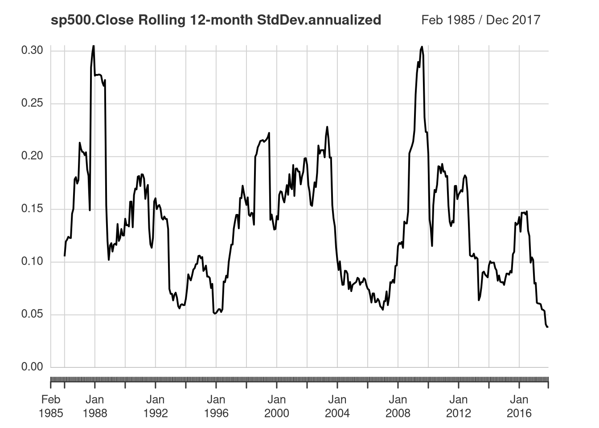

Diversify investment -> porfolio -> increase return’s expectation and reduce the risk. Hence, we need to test our investment strategy, it is called: backtesting. Backtesting are tested using historical data. We also need to use an online performance monitoring.
library(tidyquant)
Loading required package: lubridate
Attaching package: 'lubridate'
The following objects are masked from 'package:base':
date, intersect, setdiff, union
Loading required package: PerformanceAnalytics
Loading required package: xts
Loading required package: zoo
Attaching package: 'zoo'
The following objects are masked from 'package:base':
as.Date, as.Date.numeric
Attaching package: 'PerformanceAnalytics'
The following object is masked from 'package:graphics':
legend
Loading required package: quantmod
Loading required package: TTR
Registered S3 method overwritten by 'quantmod':
method from
as.zoo.data.frame zoo
ko <-getSymbols("ko", from ="2003-01-01", to ="2016-08-30", auto.assign =FALSE)
pep <-getSymbols("pep", from ="2003-01-01", to ="2016-08-30", auto.assign =FALSE)head(cbind(ko, pep))
# Make a time series plot of ko_pepplot.zoo(ko_pep)# Add as a reference, a horizontal line at 1abline(h=1)
For portfolio weights, there are options: 1. Set initial weight at initial date and never change it. So, the weight of individual stock price in the portfolio will constantly changing because the changes of the price itself. 2. Dynamic approach -> we constantly adjusting the weight of the individual asset.
KO.Adjusted PEP.Adjusted
2003-01-02 NA NA
2003-01-03 -0.002452221 0.006960458
2003-01-06 0.004022290 -0.010137951
2003-01-07 -0.012466039 -0.018156321
2003-01-08 -0.006537189 0.012328179
2003-01-09 0.010437490 0.010304142
# Remove the first row (NA)ko_ret <- ko_ret[(-1),]pep_ret <- pep_ret[(-1),]
Both pf_bh and pf_rebal contains useful information that we can extract.
# Combine both returns into one variablerets <-cbind(ko_ret, pep_ret)# Create the weights, we divide our money half to each of the asseteq_weights <-c(0.5, 0.5)# Create a portfolio using buy and holdpf_bh <-Return.portfolio(R = rets, weights = eq_weights, verbose =TRUE)# Create a portfolio rebalancing monthly pf_rebal <-Return.portfolio(R = rets, weights = eq_weights, rebalance_on ="months", verbose =TRUE)# Plot the time-seriespar(mfrow =c(2, 1), mar =c(2, 4, 2, 2))plot.zoo(pf_bh$returns)plot.zoo(pf_rebal$returns)
# Create eop_weight_bheop_weight_bh <- pf_bh$EOP.Weight# Create eop_weight_rebaleop_weight_rebal <- pf_rebal$EOP.Weight# Plot end of period weightspar(mfrow =c(2, 1), mar=c(2, 4, 2, 2))plot.zoo(eop_weight_bh$KO)plot.zoo(eop_weight_rebal$KO)
The buy and hold strategy, the weights is changes due to the fluctuaton of the prices. 2. The rebalance strategy, it always try to rebalance it to the initial set weights.
Portfolio Return Analysis is both analyse the past performance and predict the future. How to choose the best portfolio? We should always consider the risk vs reward. Portfolio management is heavily utilized math, statistics, programming skills and intuition.
How to quantify risk and reward? Reward -> portfolio mean return, it is the expectation return of a portfolio Risk -> portfolio volatility (variance and standard deviation), it is a measure how big the changes of prices againt the mean return
Return is not linear. 50% loss then followed by 50% profit, we only obtain our money 75% from the initial value. final value = initial value * 0.5 * 1.5 = 0.75 * initial value That’s why we won’t use simple arithmatic when calculate returns. Instead we will used what we called geometric return.
Now let’s try to analyze the sp500 index.
# Fetch pricesp500 <-getSymbols("^GSPC", from ="1985-01-01", to ="2017-12-30", src ="yahoo", auto.assign =FALSE)head(sp500)
# Convert the daily frequency of sp500 to monthly frequency: sp500_monthlysp500_monthly <-to.monthly(sp500)# Print the first six rows of sp500_monthlyhead(sp500_monthly)
sp500.Open sp500.High sp500.Low sp500.Close sp500.Volume
Jan 1985 167.20 180.27 163.36 179.63 2673710000
Feb 1985 179.63 183.95 177.75 181.18 2194620000
Mar 1985 181.18 183.89 176.53 180.66 2153090000
Apr 1985 180.66 183.61 177.86 179.83 1981880000
May 1985 179.83 189.98 178.35 189.55 2350340000
Jun 1985 189.55 191.85 185.03 191.85 2117000000
sp500.Adjusted
Jan 1985 179.63
Feb 1985 181.18
Mar 1985 180.66
Apr 1985 179.83
May 1985 189.55
Jun 1985 191.85
# Create sp500_returns using Return.calculate using the closing pricessp500_returns <-Return.calculate(Cl(sp500_monthly))# Time series plotplot.ts(sp500_returns)
# Produce the year x month tabletable.CalendarReturns(sp500_returns)
# Remove first value because it is NAsp500_returns <- sp500_returns[(-1),]# Compute the mean monthly returnsmean(sp500_returns)
[1] 0.007780972
# Compute the geometric mean of monthly returnsmean.geometric(sp500_returns)
sp500.Close
Geometric Mean 0.006859586
# Compute the standard deviationsd(sp500_returns)
[1] 0.04255479
The (annualized) Sharpe ratio Here we will define risk-free asset is something like Reksadana Pasar Uang, Deposito, or simply Bank Account. It is depends on you what you want to choose. Reksadana Pasar Uang (money market fund) actually not 100% risk-free. Depends on the composition of the fund, if the risk is small enought, we can safely ignore it.
Time-variation in portfolio performance So far we only view everything as static. In reality, asset price is affected by things like: cycle, news, psychological effect, political, unexpected pandemic, etc. That’s why we need to weight more the most recent observation and weight less (or discard) the most distant, it is called: Rolling estimation
# Plotting the 12-month rolling annualized meanchart.RollingPerformance(R = sp500_returns, width =12, FUN ="Return.annualized")
# Plotting the 12-month rolling annualized standard deviationchart.RollingPerformance(R = sp500_returns, width =12, FUN ="StdDev.annualized")

# Plotting the 12-month rolling annualized Sharpe ratio, assuming rf = 0chart.RollingPerformance(R = sp500_returns, width =12, FUN ="SharpeRatio.annualized")
to normal distribution? Is it correct to assume asset return on normal distribution? Of course no. It is almost illogical to use normal distribution on asset return.
Non-normality of the return distribution Asset return tend to be skewed and fat-tailed. It is possible to see more negative retuns on the left tail of the distribution (see image above).
# Use daily returnsp500_ret_daily <-Return.calculate(Cl(sp500))# Fill in window for 2008sp500_2008 <-window(sp500_ret_daily, start ="2008-01-01", end ="2008-12-31")# Create window for 2014sp500_2014 <-window(sp500_ret_daily, start ="2014-01-01", end ="2014-12-31")# Plotting settingspar(mfrow =c(1, 2) , mar=c(3, 2, 2, 2))names(sp500_2008) <-"sp500_2008"names(sp500_2014) <-"sp500_2014"# Plot histogram of 2008chart.Histogram(sp500_2008, methods =c("add.density", "add.normal"))# Plot histogram of 2014chart.Histogram(sp500_2014, methods =c("add.density", "add.normal"))
# Calculate both skewness and kurtosis in R are very easyskewness(sp500_ret_daily)
# Create a scatter plot of returnschart.Scatter(ko_ret, pep_ret, xlab ="ko returns", ylab ="pep returns", main ="ko-pep returns")
# Find the correlationcor(ko_ret, pep_ret)
PEP.Adjusted
KO.Adjusted 0.6307881
# Find and visualize the correlation using chart.Correlationchart.Correlation(cbind(ko_ret, pep_ret))
Warning in par(usr): argument 1 does not name a graphical parameter
# Visualize the rolling estimates using chart.RollingCorrelationchart.RollingCorrelation(ko_ret, pep_ret, width =22) # 22 trading days, about 1 calendar month
chart.RollingCorrelation(ko_ret, pep_ret, width =252) # 252 trading days, about 1 calendar year
ko <-getSymbols("ko", from ="2003-01-01", to ="2016-08-30", auto.assign =FALSE)pep <-getSymbols("pep", from ="2003-01-01", to ="2016-08-30", auto.assign =FALSE)aapl <-getSymbols("aapl", from ="2003-01-01", to ="2016-08-30", auto.assign =FALSE)ge <-getSymbols("ge", from ="2003-01-01", to ="2016-08-30", auto.assign =FALSE)ret_ko <-Return.calculate(Ad(ko))ret_pep <-Return.calculate(Ad(pep))ret_aapl <-Return.calculate(Ad(aapl))ret_ge <-Return.calculate(Ad(ge))# Remove NA value in the first rowret_ko <- ret_ko[(-1),]ret_pep <- ret_pep[(-1),]ret_aapl <- ret_aapl[(-1),]ret_ge <- ret_ge[(-1),]return_multi <-cbind(ret_ko, ret_pep, ret_aapl, ret_ge) # you could insert as many return as you like# Create a vector of returns means <-apply(return_multi, 2, "mean")# Create a vector of standard deviationsds <-apply(return_multi, 2, "sd")# Create a scatter plotplot(sds, means)text(sds, means, labels =colnames(return_multi), cex =0.7)abline(h =0, lty =3)
# Create a matrix with variances on the diagonaldiag_cov <-diag(sds^2)# Create a covariance matrix of returnscov_matrix <-cov(return_multi)# Create a correlation matrix of returnscor_matrix <-cor(return_multi)# Verify covariances equal the product of standard deviations and correlationall.equal(cov_matrix[1,2], as.numeric(cor_matrix[1,2] * sds[1] * sds[2]))